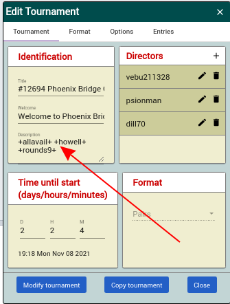
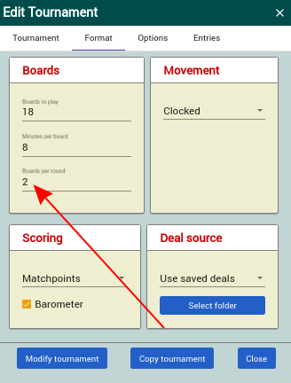
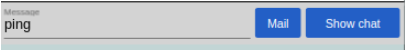
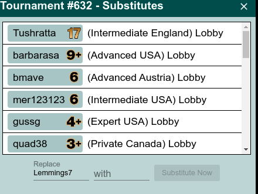
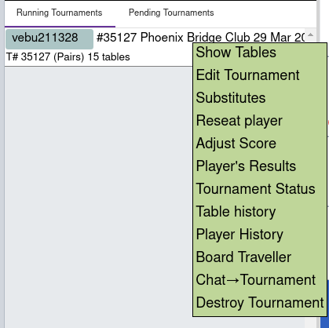
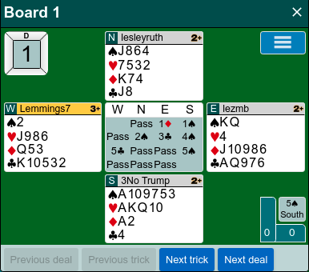

Directing a Tournament¶
Only players who are registered with the club can sign up for an event. Any players who are not registered will be rejected by BBO if they try to sign up.
It is the policy of the club not to allow individuals to play with robots and not to allow undos.
If a player is not logged into to BBO when the tournament launches, the director will see a message to the effect. (See below.)
The Role of the Director¶
This list summarizes the main duties of a director. A detailed description of the processes follows.
Manage a tournament before it starts¶
You can see pending tournaments in the Director’s tab
The main use of this is to change the tournament settings (e.g. the start time) (if extra directors are added, please ensure that the Club’s director (vebu211328) is at the top of the list as all director’s calls go to the director at the top).
The default movement for a tournament is Howell. This works well if the number of tables is eight or fewer. Keep an eye on the number of pairs that have entered for the tournament. To see the pairs who have entered, navigate to the tournament listing in the Virtual clubs>EBU- England list and click on the entries tab.
If the number of tables is nine or more (seventeen or more pairs), we should switch to a Mitchell movement. Look in the Identification tab the tournament description field and remove the text +howell+ +rounds9+ leaving only +allavail+. Do not forget to click on Modify Tournament.
If the number of tables is 4 or fewer, change the description and boards per round according to the table below.
| Tables | Description | Boards | Boards/round | Works for |
|---|---|---|---|---|
| 3 | +allavail+ +howell+ +rounds5+ +hd+ | 20 | 4 | 3 tables |
| 4 | +allavail+ +howell+ +hm18+ +hd+ | 18 | 3 | 4 tables |
| 5-8 | +allavail+ +howell+ +rounds9+ +hd+ | 18 | 2 | 5-8 tables |
| 9+ | +allavail+ +hd+ | 18 | 2 | 9+ tables |
Remember, in the event that there are only four tables, you will need to change the number of boards per round to 3. If there are only three tables, the number of boards per round needs to be changed to 4. YOu also need to ensure that the Description is correct.
N.B. +allavail+ +howell+ +rounds9+ creates a Howell movement even for tournaments with nine or more tables.
The partnership desk¶
If more than one player is in the partnership desk as the launch approaches, then message them and ask them to pair up. One can invite the other.
If only one player is in the desk and the tournament launches with an odd number of tables, then seat that player with a robot, rather than use two robots. If there is an even number of tables then that player will not play. We do not allow players to choose to play with a robot in other circumstances.
Messages from strangers offering to play¶
These are from unknown players offering to make up numbers. They are simply looking for a free tournament and can be ignored.
Players not logged in at the launch time¶
If a registered player is not logged in at launch time, BBO will send a message to alert the director. This appears as a yellow notification box in the bottom right hand corner of the screen and will disappear after a couple of seconds. (The message says not logged in or insufficient BB$, but in our case it probably means not logged in.)
In case you miss the message or it is not clear, you can establish which player is missing by clicking on the user names of the pair, one at a time. Look at the button used to send a message to them. If they are logged in, it will say ‘Chat’:

if they are not logged in, it will say ‘Mail’

You should then send a chat message to the partner of the player not logged in asking them to contact the logged out player. E.g.
Your partner is not logged in. Please contact them. If you are not logged in within the next minute or so, the tournament will start without you.
You can then decide whether to wait for a short while or to start without them. As this means postponing the start of play, this can only be for a minute or two. You might wish to inform the tournament of the reason for delay.
if you miss the message or cannot see what is says, then you can message the whole tournament:
“The tournament will not start because a player is not logged in - please check that your partner is logged in - In any case, we will launch in 1 minute”
If you decide to start the tournament without the logged out player and their partner, edit the tournament and remove the string +allavail+ from the description field in the Identification section and then click on Modify tournament.
If both members of a pair are logged out at the start, then the tournament will start without them.
At tournament launch¶
To access a running tournament
Open the Director’s tab
Click on the Running Tournaments tab
Click on the tournament
Open the table list by clicking on Table List. A list of the tables will appear. You might have to expand it horizontally to see the Join column (I usually find that the box is reluctant to resize - you should persevere). BBO can be slow to refresh the list and so you might need to click on the Refresh button to see the current status. (This video shows how to open the table list.)
If the number of tables do not match the expectation that you had before the launch, it might be that a pair was rejected because both members of the pair were logged out at launch time.
If there is a half table, seat robots at the table (see Invite substitute or robot to a seat below and the video Substitute a Player in a Seat).
When you click on Join you will be taken to that table and can see the play in action.
Open the Chat Manager if you wish. This has a list of standard messages that can be sent to the tournament. You may edit the messages or add your own if you would find it useful.
During the tournament:¶
Keep an eye on the Table List. Click on the Refresh button as BBO is slow to update your screen. Check if any player has been logged out of BBO. If they have, the background to their name will change to red. Allow them a minute or two to try and log back in. If you consider that the delay is too long, use a robot to play as a substitute.
To do this, right-click on the user name and substitute -select and then type in robot in the with field (see Invite substitute or robot to a seated below). When the original person logs back in you see a notifications to that effect in the bottom right-hand corner. They should resume their seat at the end of the board automatically, but you may need to reseat them manually.
Keep your eye on slow tables. If a table or pair are consistently slow, it might be worthwhile sending them a chat asking them to keep an eye on the time.
Keep a general eye open for Director Calls. If there are any, a red flag appears on the Director tab on the right-hand side of the screen.
Around the half way mark send out a message to let the players know you’re still there and to remind them, for example, to keep to time.
When the tournament is on the last set of boards, edit the tournament to increase the time per boards by a few minutes. This gives everyone a chance to finish the last hand.
During the last hand you might want to send a message informing the players that scores will come up when all tables have finished, and that they will be published when available.
Invite substitute or robot to a seat¶
If a player has logged out of BBO and the delay in them returning might hold up the completion of a board they need to be substituted. Generally we will us a BBO robot for this. Robots are also used to make up half tables at tournament launch.
In the Table List right-click on the name of the person/seat you want to substitute, or if you are kibitzing at the table, right-click on the name there. (If you are directing on a tablet there is no right-click and so hold your finger on the name for a couple of seconds until the menu appears.)
Click on substitute - select in the context menu

Click on Substitute - select
In the with box, enter the BBO name of the person that you wish to place in that seat, or robot if you are selecting a robot.
NB You might have to force the original player back into the seat if the robot does not relinquish it.
(This video shows substitution in action.)
Viewing a traveller for a board¶
Left click on the tournament and select Board Traveller from the menu
Select the board in question

Adjusting a score¶
If there is a problem with a score, it is possible to adjust it during the tournament, but unless you have a good reason, it is better to inform the scorer and allow them to make the change when the scores are uploaded.
Open the table List and right-click on one of the players involved in the board in question.

Click on Player’s Results

Click on the board in question

You are able to see the board, the bidding and can replay the hand. When you have decided that you wish to change the score, select Change score from the blue hamburger menu on the board

Enter the correct Contract Doubled and Tricks in the appropriate boxes and click on Adjust Score. You might have to refresh the user’s details before you see that the adjustment as taken place.